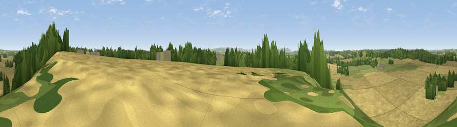

Viewpoint near Ardens Grafton
#24300 in England · top 56% of its area beats it · near Ardens GraftonThe view, rendered

A 360° render of this exact spot computed from the terrain model, tree cover and land cover — summer colours, afternoon light, calibrated against photographs of famous viewpoints. Real trees, hedges and buildings will differ in detail.
The panorama
Grey silhouette: terrain skyline in each direction (720 bearings, Earth curvature and refraction included). Dashed green: skyline with trees (+15 m) and buildings (+8 m) as obstacles. Blue strip: how far the ground is visible on each bearing.
Where the view opens
Wedge length = distance to the farthest visible ground on that bearing (vegetation-aware). Rings at 10, 25 and 50 km.
What fills the view
65% cropland · 19% grassland · 15% woodland · 1% built-up
Angular shares of the visible panorama (visual magnitude), not map area. Landscape diversity 0.41 (0–1 Shannon).
Key numbers
More beautiful places nearby
The staircase of upgrades: each row has a higher view potential than everything closer. Driving times are estimates from straight-line distance, calibrated against real road routing — check an actual route before setting out.
| Place | Direction | Drive | Score |
|---|---|---|---|
| Viewpoint near Temple Grafton | ENE · 2 km | ~5 min | 55.8 |
| Viewpoint near Exhall | WNW · 2 km | ~5 min | 62.1 |
| Viewpoint near Arrow | W · 6 km | ~13 min | 63.1 |
| Lodge Hill | N · 7 km | ~14 min | 64.0 |
| Rous Lench Hill | W · 10 km | ~19 min | 64.2 |
| Viewpoint near Meon Vale | SSE · 11 km | ~21 min | 77.0 |
| Broadway Hill | S · 19 km | ~32 min | 77.7 |
| Viewpoint near Elmley Castle | SW · 21 km | ~35 min | 80.5 |
52.19155, -1.83209 · source: screening · position refined by local search. Computed location — check access rights before visiting.